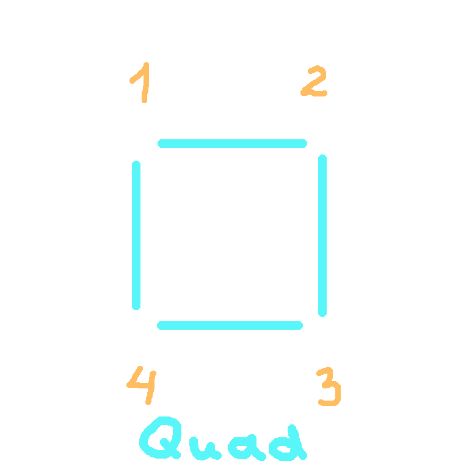
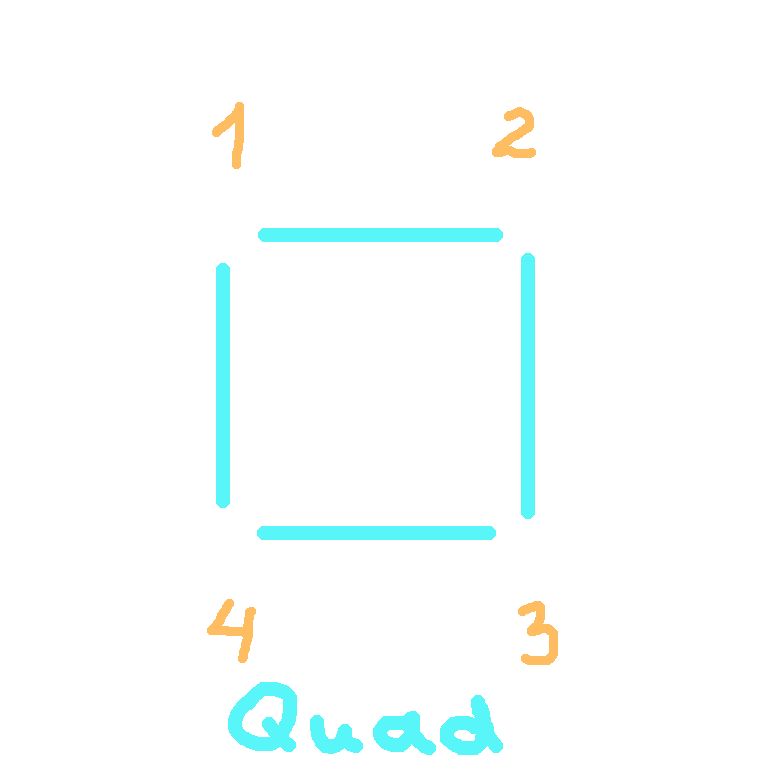

* Intro
* What is a 3D object
* How to build 3D objects
* What is a 3D World
* What is a 3D Camera
* Render 3D World on 2D screen using Shaders
* Conclusion
* Intro
* What is a 3D object
* How to build 3D objects
* What is a 3D World
* What is a 3D Camera
* Render 3D World on 2D screen using Shaders
* Conclusion
Intro
Hello again! I'm Nick, a software engineer and hobbyst game developer.
Recently, I decided to share the experience I've gained over several years of developing video games. I hope you will find it useful!
In this article, I'll cover the basic concepts of creating 3D games.
Unlike most 3D engines, such as Unity, Godot or UE, Gamemaker does not have extensive 3D support.
To display any 3D object, you need to assemble it yourself and run it through a special shader.
But first things first.
What is a 3D object
To display any 3D object, all vertices must have at least a position in 3D space - X, Y, and Z coordinates.
The X, Y, Z values are represented by floating-point numbers (like 10.5).
For example, let's take four vertices storing coordinates shown in the image below.
Using them, we will assemble the simplest square (yes, it can also be in 3D, although it's an ordinary plane).

How to build 3D objects
Great! We have vertices. But to make a full square we still need edges.
And here the order in which the vertices are stored in the Vertex Buffer begins to play a role.
Before sending our square to the renderer (GPU), we must tell the computer what primitive it should build -
points, straight lines, triangles, or quads. There are others, but we'll limit ourselves to these for now.
After that, the GPU will sequentially go through each vertex in the order in which they are in the vertex buffer and build the required primitive.
To better understand what I'm talking about, let's index the vertices in the order in which they would be in the buffer,
and see what the result will look like with different primitives.
 

Note that if we try to construct a triangle, the extra vertex will simply be discarded.
Cool! It would seem that in order to build a square we should use the Quad primitive. But there is a nuance that concerns the GameMaker engine...
It still does not support this type of primitive. *facepalm*
So what to do now? The solution is very simple - a square can be built from two triangles.
We will have two triangles - with vertex indexes 1, 2, 3 and 1, 3, 4.
But for this we will have to copy vertices 1 and 3 to the vertex buffer.
So instead of 4 vertices in the buffer we will have 6.
The final sequence will be as follows - 1, 2, 3, 1, 3, 4.
In fact, the triangular primitive is the most common in 3D graphics. From it, you can build an object of almost any complexity.
And the difference between 4 and 6 vertices is not great.
But what if we're going to load an object into the game that has 100,000 triangles?
A lot of the vertices will just be repeated, taking up extra GPU memory.
For this purpose, an another buffer was invented - the Index Buffer.
This seems to be the solution. But developers who use GameMaker engine are again faced with a problem -
index buffers are not supported either. *facepalm x2*
And unfortunately, this is something you will have to live with (at least for now).
So choose your models wisely, look at how many vertices they contain, and what these vertices store.
What is 3D World
Perhaps many people are not familiar with matrices and mathematics in general,
so I will try to explain everything as simply as possible.
For example, to place a 3D object somewhere in 3D space, it must be moved to the desired position.
This is done by shifting the X, Y, Z coordinates of all the vertices of the 3D object.
In simple terms, it is just a matter of summation.
The scaling and rotating operations are a little more complex to calculate,
but can still be reduced to a combination of sequential additions and multiplications of numbers.
That's why the great mathematicians of the past came up with such a thing as matrices.
And to perform any transformation of a coordinate, it is enough to multiply it by the necessary matrix.
Sounds much simpler, doesn't it?
For those who still have no idea what a matrix is,
it is a set of numbers arranged in a certain way in a certain container (array).
Yeah, many resources present them as a two-dimensional table with rows and columns, but
in GameMaker matrices are stored as a one-dimensional array.
We will talk about what numbers are in matrices and how to create them next time,
since this is a rather broad topic.
And don't worry too much if this seems difficult to you.
In the engine itself, all the matrices are in fact created by calling a very simple single function.
Great. We have vertices from the Vertex Buffer, and translation (T), rotation (R) and scaling (S) matrices.
It is clear that we need to multiply. But in what order?
Any combination of the order S * R * T gives a valid transformation matrix.
However, it is pretty common to first scale the object, then rotate it, then translate it.
Matrix multiplication is written right-to-left, so we will have the following formula:
If you do not do it in that order, then a non-uniform scaling will be affected by the previous rotation, making your object look skewed. And the rotation will be affected by the translation, making the final position of your object very different from what the value of the translation would make you expect.
What is 3D Camera
Now we have a concept of what 3D Objects are and how they will be located in the 3D World of your future super-cool game. But to see our objects and our world, we need an Observer. In videogames, the Camera plays that role. It's usually placed inside or near the game character's head, so it feels like we are playing him. But what is a camera from a developer's point of view?
To create a View Matrix, we need to know the following:
The Up vector is needed so that our image of the world is not being upside down.
Usually this vector is directed straight into the sky of our game world.
To create a Projection matrix, we need to know the following:
The projection Width and Height are usually equal to the dimensions of the game window/screen.
The Near and Far Clipping Distances are distances between the
camera position and
imaginary planes that perpendicular to the Forward (look) vector of the camera.
Anything closer to the camera than the near clipping distance isn't displayed (it's too close),
and anything further away from the camera than the far clipping distance isn't displayed either (it's too far away).
There are two types of projections: orthographic and perspective.
Orthographic projection (from Disgaea 2)
 Perspective projection (from Anno: Mutationem)
Perspective projection (from Anno: Mutationem)
In Orthographic projection there is no visible depth effect:
all objects appear as if they are at the same distance from the camera.
In Perspective projection the size of objects depends on the distance to the camera: the further away, the smaller they are.
This projection is similar to our vision, or the lens of a real camera.
Also for perspective projection the angle of view is important. The larger it is, the more objects will fit into the camera view.
For this purpose, games often use the so-called FOV.
Render 3D World on 2D screen using Shaders
Shaders. For me, and probably for many others, the mere mention of them made me break out in a cold sweat.
That's why people came up with a technology called Shader Graph, but alas, Gamemaker doesn't have it.
From my experience, I can say that you can only learn to write shaders in practice. Which we will do in the next article.
So now I'll briefly explain how shaders connect our game world and the actual game window that the user will see.
Conclusion
In this article I went over the basic theory of creating 3D games,
sometimes touching on the features of the GameMaker engine.
In the next article, I will explain the practical part -
I will show how to implement our first 3D game, with code examples.

Thank you for reading!
If you liked the article, you can share it and/or write your impressions and wishes to me personally in the
guest book.
@Nick_Nishort
Go to home page